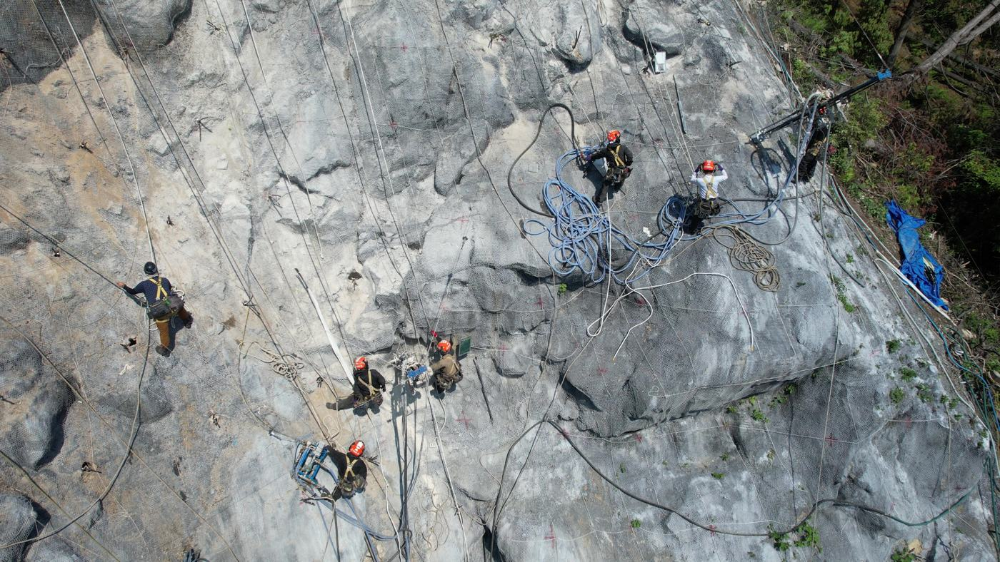
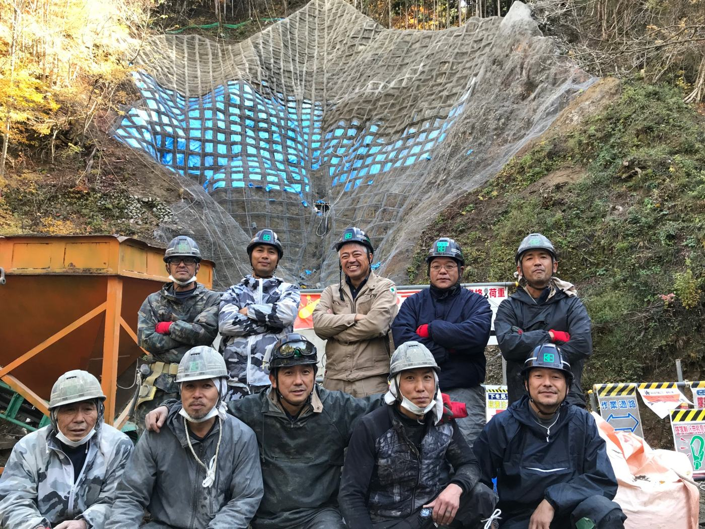

土砂災害・水害から、一人でも多くの人を救う会社でありたい。
岐阜・愛知の扇状地に根ざし、危険な法面を守り、崩れた斜面を元に戻す。調査・設計から施工まで、自社で一貫して対応します。

現場に立つのは、この顔ぶれです。
ロープで急斜面に取り付き、重機が入らない山の中でもモノレールを組んで施工します。
できること
代表的な事例
進め方
工事だけでなく、その手前から引き受けます。
1 現地調査
崩れ方・湧水・地質を見て、写真と横断で整理します。
崩れ方・湧水・地質を見て、写真と横断で整理します。
2 工法の比較と設計計算
複数案を比べ、選んだ工法は基準類に沿って計算します。
複数案を比べ、選んだ工法は基準類に沿って計算します。
3 施工計画
重機が入らない現場でも、モノレールと人力で段取りを組みます。
重機が入らない現場でも、モノレールと人力で段取りを組みます。
4 施工
法面・落石・地すべり・地盤改良まで自社施工です。
法面・落石・地すべり・地盤改良まで自社施工です。
会社概要
- 社名
- 株式会社扇屋
- 代表者
- 代表取締役 河野 春男
- 所在地
- 岐阜県各務原市蘇原野口町2-8
- 建設業許可
- 岐阜県知事許可（一般）第6415号
土木工事業／とび・土工工事業／造園工事業 - 事業部
- 法面・地盤改良事業部／外構・エクステリア事業部
- 取り組み
- 事業継続力強化計画の認定取得（緊急時の早期復旧体制）／SDGs宣言（2022年）／資格取得支援・定年後再雇用
- 電話
- 代表 058-383-6210／フリーコール 0120-998-005
工法の一覧
工法をタップすると、向く条件・向かない条件・施工の手間と、断面上で効く位置を表示します。
施工・提案の実績
困りごとで絞り込むと、同じような現場の事例が出ます。
工法選定アドバイザー
現場の状況を選ぶと、第一候補の工法とその理由、施工の手間がどこにかかるかを示します。
上の質問に答えると、ここに候補が出ます。
診断・ご相談
工事の前に、まず状態を見てほしいという相談にも応じています。
法面・斜面診断変状（亀裂・はらみ・湧水・落石の兆候）を現地で確認し、対策の要否と工法の方向性を整理します。
擁壁診断傾き・ひび割れ・水抜き孔の状態から、補修で足りるか、造り替えが要るかを判断します。
ブロック塀診断自宅、通学路、通勤路のブロック塀を確認します。各務原市では、道路に面した一定の条件のブロック塀を撤去するときに補助金が出る場合があり、申請もお手伝いします。
太陽光発電設備まわりの擁壁・法面設置地の法面・擁壁の安全性を確認します。
危ないブロック塀のサイン
ひび割れ・欠け
傾き・ぐらつき
控え壁がない
鉄筋のサビが出ている
透かしブロックが連続している
基礎が浅い・露出している
ご自身で確かめたい方は、中京エクステリア建設業協会監修のブロック塀診断カルテも使えます。
擁壁で見るところ
国土交通省 国総研「既存造成宅地擁壁の老朽化診断 目視点検調査要領」の着眼点です。当てはまる項目が多いほど、早めの診断をおすすめします。
水
表面が常に湿っている、目地や水抜き穴から水がしみ出す・流れた跡がある、水抜き穴が詰まっている・少ない
表面が常に湿っている、目地や水抜き穴から水がしみ出す・流れた跡がある、水抜き穴が詰まっている・少ない
ひび割れ
目地や積石に沿ったひび、角部の斜めのひび、開いたひびから水が出ている
目地や積石に沿ったひび、角部の斜めのひび、開いたひびから水が出ている
ずれ・開き
目地の前後のずれや開き（5mm未満／5mm〜2cm／2cm以上で見る）
目地の前後のずれや開き（5mm未満／5mm〜2cm／2cm以上で見る）
ふくらみ・傾き
表面のふくらみ、積石の浮き・抜け、前や後ろへの傾き
表面のふくらみ、積石の浮き・抜け、前や後ろへの傾き
白い析出物
ひびや目地から白いものが出ている（背面の水とひびのサイン）
ひびや目地から白いものが出ている（背面の水とひびのサイン）
天端まわり
擁壁の上の排水溝の土砂詰まり・ずれ・ひび、地面の小さな陥没
擁壁の上の排水溝の土砂詰まり・ずれ・ひび、地面の小さな陥没